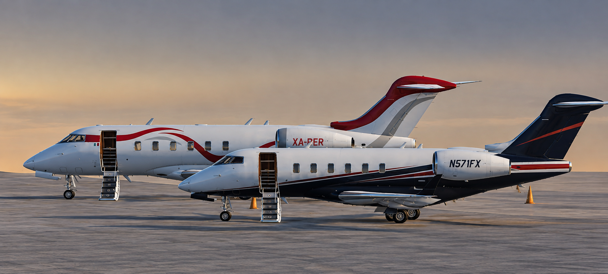
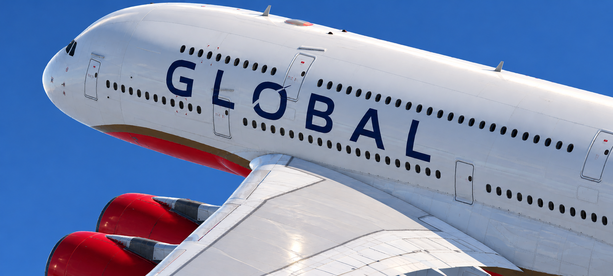

VJG · AIRCRAFT DIRECTORY
Flota de
VistaJet Group.
Datos esenciales para planificar rutas y operar las aeronaves en Infinite Flight: alcance, velocidades, límites de flaps, pesos y referencias de ascenso/descenso.

PRIVATE AVIATION
Bombardier Challenger 350
IF-DUOAAeronave ejecutiva para vuelos privados y misiones de negocios.
Datos esenciales de operación
- Uso VJG: Private Aviation · Registro: IF-DUOA · OACI: CL35 · categoría IF: B
- Alcance de referencia Infinite Flight: 3,200 NM
- Crucero: Mach 0.80–0.82 · MMO: Mach 0.83 · techo: FL450
- Envergadura: 21.0 m · MTOW: 18,416 kg · MLW: 15,490 kg
- Motores: 2 × Honeywell HTF7350 · capacidad indicada: hasta 9 pasajeros
- Límites de flaps: 10/20 hasta 210 kt; 30 hasta 175 kt
- Referencia de perfil IF: despegue habitual Flaps 10; ascenso 250 kt hasta 10,000 ft, luego 280 kt o Mach 0.80; crucero Mach 0.80–0.82; aterrizaje Flaps 30 y aproximación VRef + 10 kt.
- Ficha Infinite Flight · Guía de perfiles IF

CARGO OPERATIONS
Boeing 777F
IF-FVZVAeronave carguera para transporte de mercancías en rutas de largo alcance.
Datos esenciales de operación
- Uso VJG: Cargo Operations · Registro: IF-FVZV · OACI: B77L · categoría IF: E
- Alcance de referencia Infinite Flight: 4,968 NM
- Crucero de ficha: Mach 0.84 · referencia de perfil QRG: Mach 0.82 · MMO: Mach 0.87 · techo: FL431
- Envergadura: 64.80 m · MTOW: 297,500 kg · MLW: 213,180 kg
- Motores: 2 × GE90-110B / GE90-115B · configuración carguera: 0 pasajeros
- Límites de flaps: 1: 255 kt; 5: 235 kt; 15: 215 kt; 20: 195 kt; 25: 185 kt; 30: 170 kt
- Referencia de perfil IF: 250 kt hasta 10,000 ft; 320 kt hasta FL280; por encima, Mach 0.82. La guía QRG indica Flaps 15 para despegue del 777F; ajustar según peso y condiciones del simulador.
- Ficha Infinite Flight · Guía rápida QRG

PASSENGER / CHARTER
Airbus A380
IF-JNPBAeronave de gran capacidad para operaciones de pasajeros cuando la infraestructura aeroportuaria lo permite.
Datos esenciales de operación
- Uso VJG: pasajeros / chárter · Registro: IF-JNPB · OACI: A388 · categoría IF: F
- Alcance de referencia Infinite Flight: 7,991 NM · capacidad indicada en la ficha: 779 pasajeros
- Crucero: Mach 0.85 · MMO: Mach 0.89 · techo de ficha: FL430
- Envergadura: 79.75 m · MTOW de ficha: 560,000 kg · MLW de ficha: 386,000 kg
- Motorización según configuración: 4 × Engine Alliance GP7000/GP7200 o 4 × Rolls-Royce Trent 900
- Límites de flaps: 1: 263 kt; 1+F: 222 kt; 2: 220 kt; 3: 196 kt; FULL: 182 kt
- Referencia de perfil IF: crucero Mach 0.83–0.85; la guía rápida recomienda reducir hacia 250 kt durante el descenso alrededor de 16,000 ft y evitar descensos mayores de 2,500 ft/min por debajo de 20,000 ft. Verificar configuración y peso antes de cada operación.
- Ficha Infinite Flight · Guía rápida QRG · Guía de perfiles IF
Nota operativa: los valores y perfiles se resumen del documento “Fichas técnicas” y de las fuentes que cita, orientados a Infinite Flight. Las cifras de diferentes secciones del documento pueden variar según la fuente o el perfil; por eso se identifica por separado la ficha técnica y la guía de simulación. No son procedimientos aprobados para aeronaves reales. Para cada vuelo, considera el peso, el viento, la temperatura, la longitud de pista y la distancia a alternos.
← VOLVER A VJG